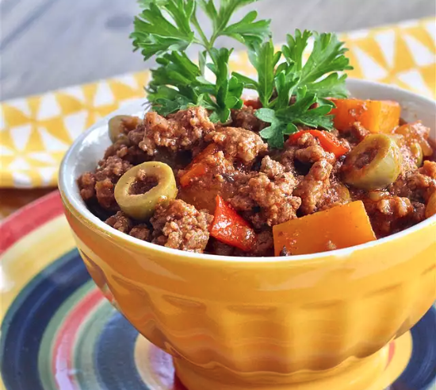

Abuela's Picadillo

This is my grandmother's Cuban picadillo (ground beef hash/chili) recipe which is usually served with white rice, beans and plantains. Picadillo also goes great with mashed potatoes and can be made without the squash.
This dish is a favorite at home so I usually make 2 pounds to have leftovers for making empanadas (meat pies) the next day. Picadillo also freezes well. Of course my kids say this is the best picadillo they've ever had and I have to agree!
Ingredients
- 2 pounds lean ground beef
- 1/4 cup olive oil
- 1/2 green bell pepper, chopped
- 2 tablespoons minced garlic
- 2 (8 ounce) cans tomato sauce
- 2 cups water
- 1/2 cup red cooking wine
- 3 tablespoons hot sauce (such as Louisiana)
- 1 (1.41 ounce) package sazon seasoning (such as Badia Tropical)
- 1 tablespoon chopped fresh parsley
- 1/2 teaspoon garlic powder
- 1/2 teaspoon onion powder
- 1/2 teaspoon ground cumin
- 1/4 teaspoon ground black pepper
- 1/4 teaspoon ground bay leaf
- 3 ounces Spanish-style olives
- 1 teaspoon salt, or to taste
- 1 small butternut squash, peeled and cut into cubes
Steps
- Cook and stir ground beef in a large stockpot until browned, 5 to 10 minutes. Drain grease.
- Heat olive oil in small skillet over medium heat. Add onion, green bell pepper, and garlic; cook and stir until fragrant, 2 to 3 minutes. Stir into beef in the stockpot.
- Pour tomato sauce, water, cooking wine, and hot sauce into the stockpot. Stir in sazon seasoning, parsley, garlic powder, onion powder, cumin, pepper, and bay leaf. Bring to a boil; reduce heat to low and simmer picadillo, uncovered, until slightly thickened, about 10 minutes.
- Split olives in half with your fingers and stir into the picadillo. Add squash. Simmer until liquid reduces but picadillo is not dry, 45 to 60 minutes. Season with salt.